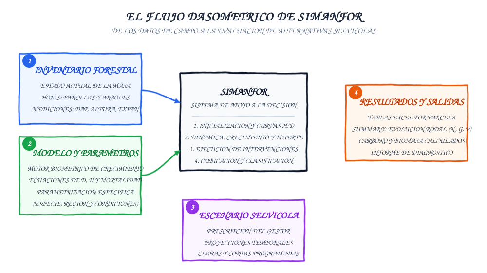
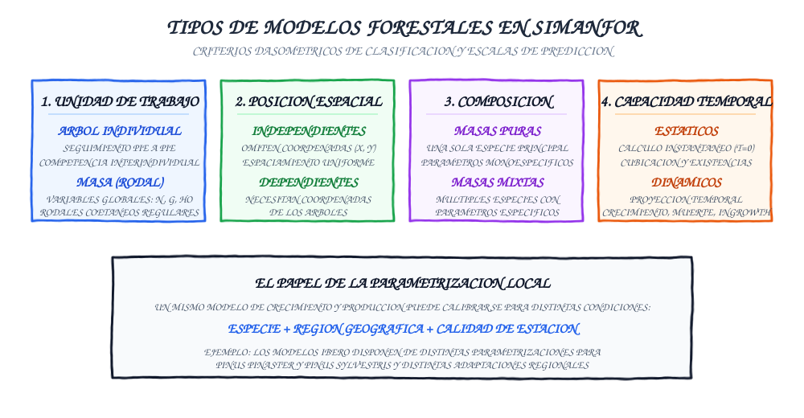

Key concepts and simulation workflow
To leverage the full analytical potential of SIMANFOR and design simulations with technical rigor, it is essential to understand the conceptual framework underpinning the platform. In biometric practice, terms such as model, simulator, scenario, and parameterization are often used interchangeably, yet they correspond to distinct computational and biological roles.
This guide establishes the conceptual foundation of the simulator, clarifies the taxonomy of available forest models, and details which silvicultural operations can be executed on the platform.
Table of contents
- Conceptual model and simulation triad
- Formal definitions in quantitative forestry
- Types of forest models in SIMANFOR
- Supported silvicultural operations and treatments
- Treatments and activities currently not available
- Quick biometric glossary and reference sources
- Recommended next steps
Conceptual model and simulation triad
Every simulation in SIMANFOR articulates three independent input elements to generate a consistent set of outputs:

- Forest inventory (the starting data): Describes the real initial state of the forest stand at a given point in time ($t_0$). It may consist of individual-tree measurements (diameter at breast height, total height, and species) or aggregate stand-level variables ($N$, $G$, $Ho$, age).
- Forest model and its parameterization (the biophysical engine): Contains the mathematical equations reproducing the biological dynamics of the stand. It governs how trees grow in diameter and height, the probability of mortality driven by competition or natural senescence, and how ingrowth incorporates into the measurable stratum.
- Silvicultural scenario (the technical prescription): Defines the schedule of interventions planned by the user. It represents the chronological sequence of growth projection stages (where the stand develops over time) and harvesting stages (where trees are thinned or harvested).
- SIMANFOR simulator (the computational integrator): Reads the input inventory, initializes secondary variables that were not measured in the field (using height-diameter submodels), applies the biological rules of the selected model step by step according to the scenario, and compiles output workbooks.
- Results (the decision-support outputs): Tabular Excel workbooks detailing the complete biometric trajectory of each simulated plot: density trends, basal areas, over-bark and under-bark standing timber volumes, commercial log assortments, biomass, carbon stock, and diagnostic reports.
Formal definitions in quantitative forestry
To establish a unified terminology across this documentation, SIMANFOR adopts formal definitions established in international forest biometrics literature:
- Decision Support System (DSS): "a tool designed to support the resolution of ill-structured decision problems by integrating a user interface, a simulation engine, expert rules, stakeholder preferences, database management, and optimization algorithms" (Muys et al., 2010); "a set of decision-making rules built into computer models that help the computer resolve complex problems - note these rules tell the computer when to accept or reject data and options, and how to proceed as the changes are made" (Helms, 1998).
- Forest inventory: "a set of objective sampling methods designed to quantify the spatial distribution, composition, and rates of change of forest parameters within specified levels of precision for the purposes of management" (Helms, 1998).
- Forest modeling: the scientific application of mathematical, statistical, and computational frameworks to represent and predict the dynamics, structure, and functions of forest ecosystems (Vázquez-Veloso, 2026).
- Growth and yield model: "a set of relationships, usually expressed as equations and embodied in a computer program, that provides estimates of future stand development given initial stand conditions and a specified management regime – note growth-and-yield models are used to generate managed-stand yield tables, predict future stand conditions for management planning, update inventories, and compare predicted results of alternative possible management regimes" (Helms, 1998).
- Model: "an abstract representation of objects and events from the real world for the purpose of simulating a process, predicting an outcome, or characterizing a phenomenon – note types of models include mental models (...), quantitative models (which capture relationships as mathematical equations), data models (...), spatial models (...), physical models (...), and financial models (...)" (Helms, 1998). In SIMANFOR, the term "model" refers specifically to a quantitative model based on mathematical equations and expressions.
- Parameterization: the process of assigning numerical values (coefficients) to a model's parameters to represent specific conditions. While a single model structure (represented by a fixed mathematical expression) may be applied across different species, locations, or other characteristics, the parameters must be specifically estimated to reflect those unique biological or environmental contexts (Vázquez-Veloso, 2026).
- Scenario (Silvicultural scenario): planned chronological sequence or trajectory of silvicultural treatments and growth projections designed to achieve defined management objectives in a specific forest stand (Vázquez-Veloso, 2026).
- Silviculture: "theory and practice that regulates the establishment, development, composition, health, quality, utilization, and regeneration of forest stands, in order to meet the diverse needs of society, especially of the closest communities, in a continuous or sustainable manner" (Serrada et al., 2008), translated from Spanish; "the art and science of controlling the establishment, growth, composition, health, and quality of forests and woodlands to meet the diverse needs and values of landowners and society on a sustainable basis - see silvics" (Helms, 1998).
- Simulator: "a tool that calculates results for a model using a sample of representative scenarios. Simulators for decision support may preferentially focus on model simplification, automation and visualization" (Muys et al., 2010).
- Sustainable forest management: "the stewardship and use of forests and forest lands in a way, and at a rate, that maintains their biodiversity, productivity, regeneration capacity, vitality and their potential to fulfil, now and in the future, relevant ecological, economic and social functions, at local, national and global levels, and that does not cause damage to other ecosystems" (MCPFE, 1993; in Pretzsch, 2009).
- Trade-off: "the exchange of one thing or value in return for another, usually the loss of one benefit for the gain of a different benefit – note tradeoffs commonly involve weighing many different factors in the decision-making process, including how equity will be distributed among those who might gain or lose, costs of the trade-off, time required to realize benefits and losses, and whether the proposed trade-off will meet or assist in meeting management goals" (Helms, 1998).
Bibliographic references
- Helms, J.A. (1998). The Dictionary of Forestry. Society of American Foresters, Bethesda, MD.
- MCPFE (1993). Resolution H1: General guidelines for the sustainable management of forests in Europe. In: Second Ministerial Conference on the Protection of Forests in Europe, Helsinki, pp. 16–17.
- Muys, B., Hynynen, J., Palahi, M., Lexer, M.J., Fabrika, M., Pretzsch, H., Gillet, F., Briceño, E., Nabuurs, G.-J., Kint, V. (2010). Simulation tools for decision support to adaptive forest management in Europe. Forest Systems, 19(SI), 86–99. https://doi.org/10.5424/fs/201019S-9310
- Pretzsch, H. (2009). Forest Dynamics, Growth and Yield: From Measurement to Model. Springer-Verlag, Berlin Heidelberg.
- Serrada, R., Montero, G., Reque, J.A. (2008). Compendio de selvicultura aplicada en España. Instituto Nacional de Investigación y Tecnología Agraria y Alimentaria (INIA), Madrid.
- Vázquez-Veloso, A. (2026). Análisis de la dinámica forestal en un contexto de cambio (PhD Thesis). Universidad de Valladolid, Palencia. https://doi.org/10.13140/RG.2.2.15148.42885
Types of forest models in SIMANFOR
The model catalog in SIMANFOR spans different biometric scales and methodologies:

1. By minimum modeling unit
- Individual-tree models: The basic computational unit is each tree sampled in the inventory plot. The model simulates individual diameter increment, height growth, and mortality probability as functions of tree dimensions and competitive pressure from neighbors. These models provide detailed diameter distributions and commercial timber assortments.
- Stand-level models: The basic computational unit is the entire plot or stand. Calculations rely on aggregate biometric variables ($N$ stems/ha, basal area $G$, dominant height $Ho$, quadratic mean diameter $dg$, stand age, and site index). They are suited for even-aged pure stands or when individual-tree measurements are unavailable.
2. By spatial position of trees
- Distance-independent models: Do not require spatial coordinates ($x, y$) of trees. They assume uniform spacing or evaluate competitive status through relative biometric ratios (such as basal area in larger trees, $BAL$, or the diameter ratio $d/dg$). The vast majority of individual-tree models in SIMANFOR are distance-independent, simplifying field inventory protocols.
- Distance-dependent models: Require explicit tree mapping to compute spatial competition indices and influence zones. Although SIMANFOR is architecturally prepared to host them, they require stem-mapped inventories.
3. By species composition of the stand
- Pure stand models: Parameterized to simulate monospecific stands or stands where a single species represents virtually all canopy cover (e.g., dedicated models for Pinus sylvestris, Pinus pinaster, or Pinus nigra).
- Mixed stand models: Parameterized to simulate the coexistence of two or more species within the same stand, explicitly modeling interspecific competition and how mixture modifies growth and mortality rates compared to pure stands (e.g., binary combinations from the Spanish NFI for pine-oak mixtures).
4. By temporal projection capability
- Static models: Do not project stand growth over time. Their purpose is to estimate instantaneous standing stocks, volume tariffs, biomass, or allometric relationships at the time of inventory ($t = 0$).
- Dynamic models: Project stand development forward across successive time intervals, simulating three coupled biological processes: growth of surviving trees, natural mortality, and ingrowth into the measurable stratum.
5. The role of local parameterization
A given growth and yield model structure (same mathematical formulation and computational flow) can be calibrated for distinct ecological conditions based on botanical species, geographic region, or site quality. For instance, the IBERO model family (IBEROPT and IBEROPS) features specific parameterizations for Pinus pinaster and Pinus sylvestris, as well as distinct regional calibrations reflecting provenance and ecological context.
Supported silvicultural operations and treatments
Within a silvicultural scenario in SIMANFOR, users can schedule two major categories of sequential operations:
1. Growth projections (EXECUTION)
- Advance the biological clock of the simulation across a specified duration (
time). - The simulator executes the model equations to compute diameter and height increments for each tree or stand average, alongside competition-induced natural mortality.
- Each forest model features a recommended projection cycle (typically 5- or 10-year intervals, aligned with the calibration inventory periodicity).
2. Silvicultural harvests and thinnings (HARVEST)
- Remove a fraction of trees from the stand, simulating thinning, clearing, or final harvest operations.
- In each intervention, the user specifies three fundamental biometric parameters:
- Thinning type:
- Thinning from below: Selectively removes suppressed trees and lower diameter classes.
- Thinning from above: Selectively removes dominant or codominant trees to release designated crop trees.
- Systematic thinning: Mechanically or uniformly removes trees across all diameter classes without selection bias.
- Species-selective harvests: Interventions targeted specifically at one species within mixed stands.
- Harvests with crop trees: Selects a target proportion of superior trees to preserve them from cutting while removing surrounding competitor trees.
- Biometric extraction criterion: Thinning intensity can be measured in stem density ($N$), basal area ($G$), or volume ($V$).
- Extraction intensity: Percentage of standing stock to remove relative to pre-harvest levels (e.g., removing 25% of basal area).
Treatments and activities currently not available
To maintain realistic expectations when planning simulations, the following silvicultural treatments are not currently implemented in SIMANFOR:
- Pruning: Pruning operations of any kind are not simulated.
- Fertilization and soil amendments: No operational submodels account for growth acceleration from nutrient additions.
- Non-wood harvesting based on resin tapping or cork stripping: While the platform computes standing stocks of biomass, carbon, pine nuts, and edible mycorrhizal mushrooms, it does not include dynamic modules for resin extraction or cork harvesting.
- Soil preparation and mechanical tillage.
Rationale of currently unavailable operations
In quantitative forestry, a simulator can only execute an operation if backed by a validated mathematical model empirically demonstrating how that treatment modifies tree growth functions, allometry, and survival probability. The modular architecture of SIMANFOR is prepared to incorporate these activities as soon as validated equations become available. To propose or implement a new model or rule, contact us at simanfor.forest@uva.es.
Quick biometric glossary and reference sources
The following table summarizes the most common biometric variables used in input inventories and SIMANFOR output workbooks:
| Variable | Biometric term | Unit | Operational definition |
|---|---|---|---|
| $N$ | Stand density | stems/ha | Total number of trees per hectare present in the stand. |
| $G$ | Basal area | m²/ha | Sum of tree cross-sectional areas measured at breast height (1.30 m) per unit area. |
| $Ho$ | Dominant height | m | Mean height of the 100 thickest trees per hectare (Assmann criterion); key indicator of site quality. |
| $dg$ | Quadratic mean diameter | cm | Diameter corresponding to the tree of mean basal area: $dg = \sqrt{\frac{40000 \cdot G}{\pi \cdot N}}$. |
| $V$ | Timber volume | m³/ha | Over-bark ($Vcc$) or under-bark ($Vsc$) stem volume estimated through volume equations or tariffs. |
| $dbh$ | Diameter at breast height | cm | Stem diameter measured at 1.30 m above ground level. Core individual-tree inventory measurement. |
| $h$ | Total height | m | Vertical distance from ground level to tree tip. Estimated via $h/d$ models when not measured in the field. |
| $expan$ | Expansion factor | dimensionless | Number of trees per hectare represented by each measured tree in the inventory plot. |
Recommended external references
For further study of forestry terminology and biometric conventions:
- Spanish Forestry Society (SECF) Forestry Dictionary: Official terminology reference for Spanish-speaking forestry professionals.
- Spanish National Forest Inventory (MITECO): Official sampling methodology, concentric plot design, and volume calculations in Spain.
- Compendio de selvicultura aplicada en España (Serrada et al., 2008): Standard manual for silvicultural systems and stand management in the Iberian Peninsula.
Recommended next steps
With the key simulation concepts established, you can continue exploring the platform through the following guides:
- Platform execution pathways: Learn about execution options and select the one best suited to your technical profile.
- Forest models catalog: Explore technical datasheets, species coverage, and biometric equations available for simulation.
- Silvicultural scenarios guide: Learn how to configure projections and silvicultural treatments in detail.
Translated using AI translation assistant.